Open the pixel-accurate 96-pixel comparison page
LOG, in Leaf pixels
Eight hand-built, one-bit wordmarks. Width is measured from the leftmost ink of the l to the rightmost ink of the g. No added side padding; no antialiasing. Native samples use one image pixel per CSS pixel. Large samples are exactly 8× with nearest-neighbor display.
Start with C (28 px) and F (24 px). C preserves more of the reference spacing; F gives the letters more room at a smaller width. A is the cleanest 20 px study. The hooked l, rounded o, flat upper-right g, and leftward descender are retained throughout.
Reference:
Comparison sheet · Editable pixel patterns · Sizes and asset names
A · Smallest / fine 20 × 13 px
One-pixel strokes; keeps the tall l and wide spacing.
Actual pixels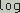
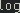
Across a 96-pixel display:
B · 24 / heavier 24 × 15 px
Two-pixel strokes; stronger on the Leaf display, with a tighter o counter.
Actual pixels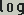
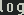
Across a 96-pixel display:
C · 28 / reference proportions 28 × 18 px
Tall ascender, open o and generous spacing. Best balance of shape and clarity.
Actual pixels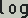
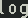
Across a 96-pixel display:
D · 30 / most spacious 30 × 19 px
Closest overall proportions; more room for the o and g counters.
Actual pixels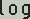
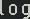
Across a 96-pixel display:
E · 24 / fine 24 × 15 px
Same placement as B, with one-pixel strokes for comparison.
Actual pixels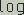
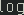
Across a 96-pixel display:
F · 24 / wider letters 24 × 15 px
Trades some of the reference spacing for more recognizable letter interiors.
Actual pixels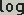
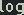
Across a 96-pixel display:
G · 20 / heavier 20 × 13 px
Minimum width with two-pixel strokes; the o becomes very narrow inside.
Actual pixels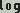
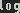
Across a 96-pixel display:
H · 28 / shorter 28 × 15 px
Lower profile for a dialog heading; broader letters depart from the reference.
Actual pixels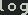
Across a 96-pixel display: